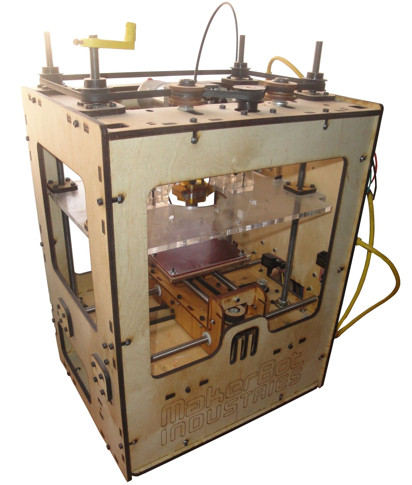
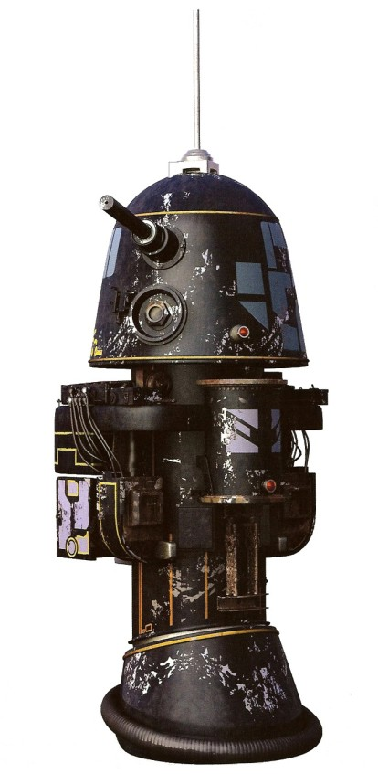

Makerbot Cupcake: R1
De WikiRobotics
Contenido
[ocultar]Introducción
Fue nuestra primera impresora 3D, la Número 8 producida por Makerbot Industries en Mayo de 2009 (Lote 1). Tuvimos que soldar toda la electrónica, grabar el bootloader, el firmware... La versión original no disponía de plataforma caliente (no existía el concepto todavía) y el extrusor MK3 dejaba de funcionar cada dos por tres.
Algunos hitos importantes logrados por R1:
- Ha impreso el primer Prinbot! Un robot modular de 2 módulos REPY1
- Ha impreso los primeros 6 Miniskybots!
- Ha impreso el primer Unitrack!
- Ha impreso el primer Orugator!
- Ha impreso "descendencia": R2D2
Méritos
| Makerbot Número 8 del mundo! |
| Ha impreso el primer printbot: Un robot modular de 2 módulos REPY1 |
Ficha
|  |
|
 |
Fotos
| Álbum de fotos completo en google+ |
|---|
Vídeos
| <youtube>2JfYikN3KGA|300|250</youtube> 10/Jun/2009: R1 Imprimiendo un módulo REPY |
Historia
- 01/Sep/2012: R1 no ha vuelto a imprimir desde que tuvo a R2. Está rota y la voy a guardar en el trastero. Puede estar orgullosa por la prole que ha creado: es la iniciadora de la Dinastía R.
- 02/Enero/2011: Comenzada esta página. El nombre de la Makerbot se cambia a R1 (antes era iearobotics). Es la notación que usaré para describir la descendencia (R1, R2, R3...).
- 24/Dic/2011: R2D2!!! El primer "hijo" de R1 ha impreso su primera pieza.
- 05/Junio/2011: Ruedas parametrizadas para el Miniskybot (Blog)
- 28/Mayo/2011:
- 03/Mayo/2011: Más piezas impresas de R2 (Blog)
- 23/Abril/2011: Publicación oficial del robot Miniskybot! 6 unidades impresas en R1! (Blog)
- 20/Abril/2011: Gafas imprimibles, by Obijuan! Impresas en R1 (Blog)
- 15/Abril/2011: Primera reunión de Clone Wars. El chásis básico de R2D2 está listo! (Blog)
- 14/Abril/2011: Nacimiento de Orugator. Todas las piezas impresas en R1 (Blog)
- 13/Abril/2011: Nacimiento de Unitrack. Todas las piezas impresas en R1 salvo una que la imprimió Jon en el MediaLab Prado (Blog)
- 10/Abril/2011: Más piezas de R2D2 impresas (Blog)
- 05/Abril/2011:
- Comienza el proyecto "Clone wars" para imprimir Repraps Prusa Mendel en la UC3M (Blog)
- R1 imprime las primeras 14 piezas de R2D2!
- 28/Marzo/2011: Miniskybot con ruedas limitadas (Blog) (Vídeo)
- 30/Enero/2011: Portapilas parametrizado, by Obijuan (Blog)
- 02/Enero/2011: Impresos 6 Miniskybots 1.0!!! (Blog)
- 29/Dic/2010:
- 19/Dic/2010: Coche de fórmula 1, por Daniel Gómez. Impreso en R1 (Blog)
- 06/Dic/2010:
- 28/Nov/2010: Primer Miniskybot 0.1 impreso!!! (Blog) (Vídeo)
- 26/Nov/2010: Cabeza del Hoap (Blog)
- 20/Nov/2010: Cucharillas para mover el café (Blog)
- 14/Nov/2010: Ruedas del Skybot migradas a freecad. Impresas en diferentes colores (Blog)
- 10/Nov/2010: Empezamos a trastear con Freecad (Blog)
- 07/Nov/2010: Migración de las fichas de casino a Openscad (Blog)
- 31/Octubre/2010: Primeras pruebas con el MK5. La cosa parece que funciona ¡muchísimo mejor!. Impresos muchísimos objetos! (Blog)
- 21/Octubre/2010: Recibimos el nuevo extrusor MK5. Estaba dispuesto a darle la última oportunidad a Makerbot antes de empezar a constuirme una Mendel. Además pedimos también una plataforma caliente.
- 25/Agosto/2010: Para intentar solucionar los problemas y centrarme, edité esta página en el wiki: Obijuan:Notas:MakerBot Cupcake. ¡Necesitaba imprimir!
- 20/Agosto/2010: El MK4 funcionó bien al principio pero al poco tiempo dejó de funcionar. Ahí me plantee el construirme una Reprap Mendel original, en vez de usar las de makerbot. Edité esta página en el wiki: Obijuan:Notas:Hacia Reprap Mendel.
- 13/Agosto/2010: Primeras pruebas con el OpenScad (Blog)
- 07/Agosto/2010: R1 llevaba parada bastante tiempo por problemas con el extrusor MK3. Hicimos una actualización al MK4, compramos dos plataformas de metacrilato y plástico de colores (Blog)
- Parón de casi un año: por problemas personales, cambio de trabajo, etc... R1 estuvo parada
- 29/Julio/2009: Ruedas para el Skybot! (Blog)
- 12/Junio/2009: Creado un repositorio de objetos 3D. R1 está imprimiendo muchas cosas! (Blog)
- 06/Junio/2009: R1 imprime el primer módulo REPY. Se construye el PRIMER ROBOT IMPRIMIBLE (printbot). La configuración Mínima: minicube-I (Blog)
- 19/Mayo/2009: R1 imprime su primera pieza (Blog)
- 10-17/Mayo/2009: Montaje de la impresora (Blog I) (Blog II) (Blog III)
- 07/Mayo/2009: Nos llegó la impresora (Blog)
- 18/Marzo/2009: Encargamos nuestra Cupcake a Makerbot (716€). Es la número 8 del mundo (Blog)
- 2-15/Feb/2009: Taller de Reprap en el MediaLab Prado. Allí conocí (el que escribe es Obijuan) a Adrian Bowyer y Zach Smith (Hoeken). Ví por primera vez una reprap funcionando... y me enamoré :-) (Blog I) (Blog II) (Blog III) (Blog IV) (Blog V)
Enlaces
|
|
Proyecto Clone Wars: Construye tu impresora 3D opensource! |
|
|
Proyecto RepRap: Impresoras 3D auto-replicantes. El origen de la revolución de las impresoras 3D opensource |